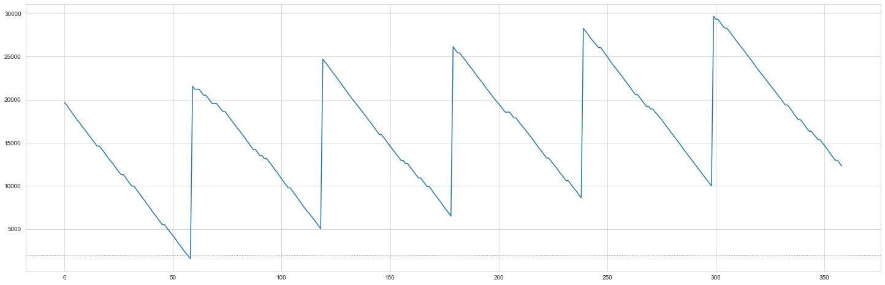

Inventory Management
## Background
In the modern business environment, companies are requiring an increasing amount of effort to reduce operating costs and to improve customer satisfaction. Inventory can play a significant role in satisfying customer demand; therefore, inventory becomes an important asset for any organization. Thus, inventory should be managed effectively and efficiently in order to minimize total cost and to satisfy customer demand. In real life, inventory management faces several challenges, such as the tradeoff between minimizing total cost and maximizing service level; therefore, choosing the correct inventory policy is now essential to management.
Economic Order Quantity (EOQ) Policy
For the age-old question “How much product should I order this time?”, the simplest answer is the EOQ model. This policy assumes a constant demand and ignores the costs of lost sales. Instead, in the EOQ model, the tradeoff between the fixed ordering cost (or, if you are manufacturing the good, then the fixed setup cost) and the inventory carrying cost is evaluated to calculate the optimal order quantity.
1. EOQ = Qo = √ ((2 * Annual Demand * setup cost)/holding cost)
2. Order cycle = √(Qo / Annual Demand) * Total working days in a year
3. Total Cost = (Qo* holding cost / 2) + (Annual demand * Setup cost)/Qo
As a quick background, the EOQ model is meant to answer the question “How much product should I order this time?” That is, when you order (or manufacture) a widget, should you order just one unit, a hundred units, a thousand units, or more? To answer that question, we need to understand the tradeoff between the fixed ordering cost (or, if you are manufacturing the good, then the fixed setup cost) and the inventory carrying cost. If there is a relatively high fixed cost, then we would want to order many units; however, if the inventory carrying cost is relatively high, we probably only want to order a few.
EOQ Model Example
The EOQ model is based on the application of the economic order quantity formula on historical data.
Manufacturer’s demand = 120,000units/year
Manufacturer’s costs:
Fixed cost per shipment (ordering cost) = $500/shipment
Purchase cost = $1/unit
Cost of holding one unit in inventory for one year = $0.3
Selling Price = $7/unit
import numpy as np
import pandas as pd
import math
import seaborn as sns
import matplotlib.pyplot as plt
sns.set_style('whitegrid')
import operator#Constant demand
d = 120000 #annual demand
S = 500 #ordering cost
h = 0.3 #holding cost
selling_price = 5
unit_cost = 1
optimal_quantity = math.sqrt((2*d*S)/h)
cycle_time = math.sqrt((2*S)/(h*d))
order_cycle = cycle_time *360 #Assuming total of 360 working days in a year
What is the buyer’s optimal order quantity?
optimal_quantity
20000.0What is the ordering interval (in days)?
review_period_eoq = round(order_cycle,2)
review_period_eoq 60.0Simulation Model
The EOQ quantity and cycle time are applied in simulations that try to replicate a market with uncertain demand. We assume that a review period of 60 days, an order quantity of 20,000 units, and a lead time of 0 days. The inventory status is recorded in the simulation.
Creating a function to simulate daily demand
# Creating a function that allocates the demand if there is a purchase
def daily_demand(mean, sd, probability):
random_num = np.random.uniform(0, 1) #chose a random number between 1 and 0
if random_num > probability: #if number is more than probability then there is no sale
return 0
else:
return np.random.normal(mean, sd)
#demand follows a log-normal distribution using mean and sd of the previous year's demand.# Define Monte Carlo Simulation to replicate demand and inventory
# M = capacity of the ware house
# review_period = Agreed time to place order (ie monthly = 30, every 10 days = 10)
# probability = Probability of a sale
# mean = Historical mean of sales
# sd = Historical sales standard deviation
def eoq_monte_carlo(M,review_period,probability,mean,sd):
stock_out = 0
inventory = M
# dictionary to store all the information
data = {'inv_level': [], 'daily_demand': [], 'units_sold': [], 'units_lost': [], 'orders': []}
for day in range(1, 360):
day_demand = daily_demand(mean, sd, probability)
day_demand = round(day_demand,0)
#used to determine if there is a sale and what the demand would be
data['daily_demand'].append(day_demand)
if day % review_period == 0:
#check if the day to place order
q = M # quantity to be ordered
data['orders'].append(round(q,0))
# update inventory when product has been received from manufacturer
inventory += q
inv_gap = inventory - day_demand
if inv_gap >= 0: #check if inventory is enough to satisfy demand
data['units_sold'].append(day_demand)
inventory -= day_demand #reduce inventory by daily demand
else:
data['units_sold'].append(round(inventory,0))
lost_sales = day_demand - inventory
data['units_lost'].append(round(lost_sales,0))
inventory = 0
stock_out += 1
data['inv_level'].append(round(inventory,0))
return data#function to total cost
# data = output from the monte carlo function
def calculate_cost(data,days,unit_cost,holding_cost,order_cost):
Co = len(data['orders']) * order_cost
Ch = sum(data['inv_level']) * holding_cost * (1 / days)
cost = sum(data['orders']) * unit_cost
cost = cost + Co + Ch
return cost#function to calculate profit
def calculate_profit(data,days,unit_cost,holding_cost,order_cost,selling_p):
revenue = sum(data['units_sold']) * selling_price
Co = len(data['orders']) * order_cost
Ch = sum(data['inv_level']) * holding_cost * (1 / days)
cost = sum(data['orders']) * unit_cost
profit = revenue - cost - Co - Ch
return profitApplication of EOQ Models on Constant Demand
This scenario assumes no uncertainty; in other words, this scenario assumes a constant demand and a purchase probability of 1. Therefore, the demand standard deviation is assumed to be 0, and the EOQ quantity and review period are used.
#applying EOQ model
eoq_data = eoq_monte_carlo(M = 20000,review_period=60,probability=1,mean=333.3,sd=0)
plt.figure(figsize=(25,8))
plt.plot(eoq_data['inv_level'])
plt.axhline(2000, linewidth=1, color="grey", linestyle=":")
plt.show()
cost = calculate_cost(eoq_data,days=360,unit_cost=1,holding_cost=0.3,order_cost=500)
cost
105551.28333333334
Scenario 1: Applying the EOQ Model to an Uncertain Demand
The scenario below assumes there is uncertainty in demand for a product on any given day and uncertainty in the number of products demanded.
Probability of demand in a given day = 0.9
Mean daily demand = 333.3
Standard deviation of daily demand = 20
Lead time = 0
prob = 0.90 #probability of demand
mean_demand = 333.3
std_demand = 20
inventory = optimal_quantity #staring with EOQeoq_data2 = eoq_monte_carlo(M = 20000,review_period=60,probability=0.9,mean=333.3,sd=20)plt.figure(figsize=(25,8))
plt.plot(eoq_data2['inv_level'])
plt.axhline(2000, linewidth=1, color="grey", linestyle=":")
plt.show()

cost2 = calculate_cost(eoq_data2,days=360,unit_cost=1,holding_cost=0.3,order_cost=500)
cost2 107630.785revenue2 = calculate_profit(eoq_data2,days=360,unit_cost=1,holding_cost=0.3,order_cost=500,selling_p=7)
revenue2 427814.215The diagram above show that when the EOQ model is used to calculate the re-order quantity, more and more inventory is held over time. The uncertainty in demand has caused an increase in costs due to an increase in the inventory cycle.
Scenario 2: Continuous Review Model
To combat the holding costs that can accumulate due to demand uncertainty, we can determine the reorder point by the inventory level. This policy is called the continuous review model.
def cc_monte_carlo(Capacity,reorder_point,probability,mean,sd):
inventory = Capacity
order_placed = False
order_time = 0
stock_out = 0
# dictionary to store all the information
data = {'inv_level': [], 'daily_demand': [], 'units_sold': [], 'units_lost': [], 'orders': []}
for day in range(1, 365):
day_demand = daily_demand(mean, sd, probability)
day_demand = round(day_demand,0)
#used to determine if there is a sale and what the demand would be
data['daily_demand'].append(day_demand)
if inventory <= reorder_point :
# Time to place an order
inventory += Capacity
data['orders'].append(round(Capacity,0))
#increase inventory with order quantity
inv_gap = inventory - day_demand
if inv_gap >= 0: #check if inventory is enough to satisfy demand
data['units_sold'].append(day_demand)
inventory -= day_demand #reduce inventory by daily demand
else:
data['units_sold'].append(round(inventory,0))
lost_sales = day_demand - inventory
data['units_lost'].append(round(lost_sales,0))
inventory = 0
stock_out += 1
data['inv_level'].append(round(inventory,0))
return datacc_data=cc_monte_carlo(Capacity=20000,reorder_point=0,probability=1,mean=333.3,sd=20)plt.figure(figsize=(25,8))
plt.plot(cc_data['inv_level'])
plt.axhline(2000, linewidth=1, color="grey", linestyle=":")
plt.show()
cost3 = calculate_cost(cc_data,days=360,unit_cost=1,holding_cost=0.3,order_cost=500)
cost3
105592.545revenue3 = calculate_profit(cc_data,days=360,unit_cost=1,holding_cost=0.3,order_cost=500,selling_p=7)
revenue3
1665835.64935The costs using this model are slightly lower than those of the EOQ model, and consequently, the expected profits from the continuous review model are higher than that of the EOQ model.
Scenario 3: Periodic Review Model
Another policy to consider is the periodic review policy. Here, the reorder point is the same as the EOQ model; however, the quantity ordered varies according to the maximum order point. The order up-to quantity, M, is 20,000.
The difference between the EOQ model and the periodic review model is that the periodic review compares the current inventory status to the capacity of the warehouse at the review period. The difference between the current inventory status and the ware house capacity is used as the reorder quantity.
# Define Monte Carlo Simulation to imitate a periodic review model
def pr_monte_carlo(M,review_period,probability,mean,sd):
inventory = M
q = 0
stock_out = 0
order_placed = False
# dictionary to store all the information
data = {'inv_level': [], 'daily_demand': [], 'units_sold': [], 'units_lost': [], 'orders': []}
for day in range(1, 365):
day_demand = daily_demand(mean, sd, probability)
day_demand = round(day_demand,0)
#used to determine if there is a sale and what the demand would be
data['daily_demand'].append(day_demand)
if day % review_period == 0:
#check if the day to place order
q = M - inventory # quantity to be ordered
data['orders'].append(round(q,0))
# update inventory when product has been received from manufacturer
inventory += q
inv_gap = inventory - day_demand
if inv_gap >= 0: #check if inventory is enough to satisfy demand
data['units_sold'].append(day_demand)
inventory -= day_demand #reduce inventory by daily demand
else:
data['units_sold'].append(round(inventory,0))
lost_sales = day_demand - inventory
data['units_lost'].append(round(lost_sales,0))
inventory = 0
stock_out += 1
data['inv_level'].append(round(inventory,0))
return datapr_data= pr_monte_carlo(M = 20000,review_period=60,probability=0.9,mean=333.3,sd=20)plt.figure(figsize=(25,8))
plt.plot(pr_data['inv_level'])
plt.axhline(2000, linewidth=1, color="grey", linestyle=":")
plt.show()
cost4 = calculate_cost(pr_data,days=360,unit_cost=1,holding_cost=0.3,order_cost=500)
cost4
112017.3925revenue4 = calculate_profit(pr_data,days=360,unit_cost=1,holding_cost=0.3,order_cost=500,selling_p=7)
revenue4
1615675.1662750002summ_table = pd.DataFrame({'EOQ': [cost2, revenue2],'Continous Review':[cost3,revenue3],'Periodic Review':[cost4,revenue4]})
idx = ['Costs', 'Revenue']
summ_table = summ_table.set_index(pd.Index(idx))
summ_table| EOQ | Continous Review | Periodic Review | |
|---|---|---|---|
| Costs | 1.073597e+05 | 1.055925e+05 | 1.120174e+05 |
| Revenue | 1.628700e+06 | 1.665836e+06 | 1.615675e+06 |
Final Conclusion
From the tables above, we can see that the continuous review policy (scenario 2) outperforms the EOQ model (scenario 1) and the periodic review policy (scenario 3) in terms of the expected profits for each product and proportion of lost orders.
Both the continuous and periodic review policies have their advantages. The periodic review policy has a fixed review period, which allows companies to better forecast the orders they made over some time. On the other hand, the continuous review policy keeps the order size constant and offers flexibility with regards to the times at which to place the order.
The expected profits are dependent on different costs (holding costs, ordering costs or manufacturing costs, etc.) that are different for every product and organization. The right inventory management model depends on the impact of these cost and the demand distribution of the product.
References
[1] Anderson, Sweeney, Williams, Camm, Cochran, Fry, Ohlmann. An Introduction to Management Science: Quantitative approaches to Decision Making. 14th Edition, 2015. Cengage Learning. pp. 457–478.
[2] Nagpurkar, M. (2020, April 2). Inventory Management using Python. Retrieved June 3, 2020, from https://towardsdatascience.com/inventory-management-using-python-17cb7ddf9314